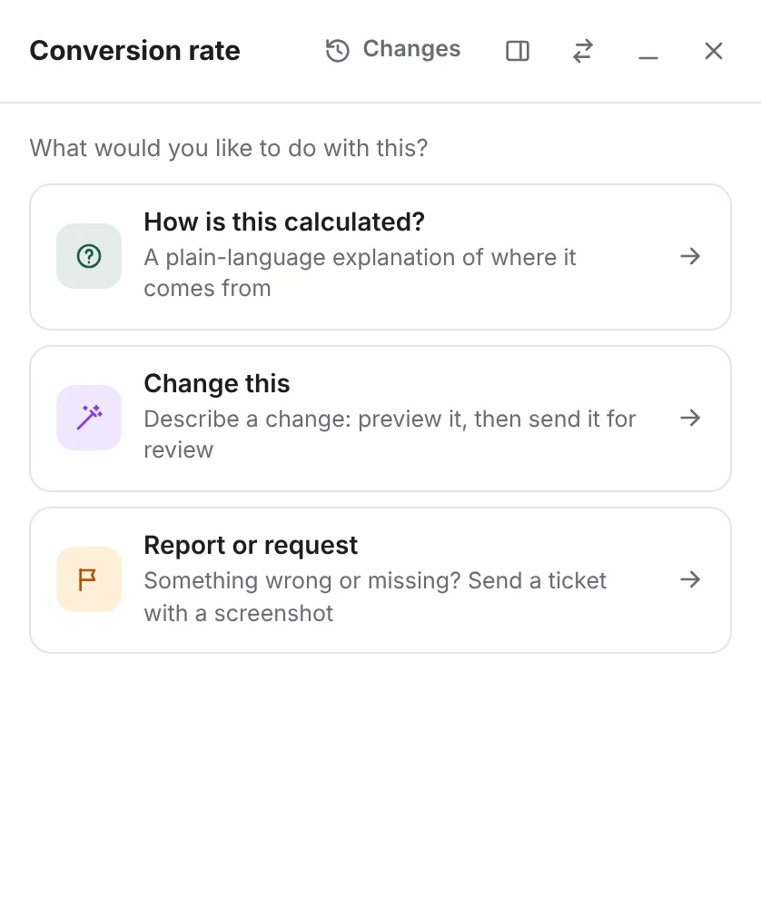

“How is this calculated?”
Finance, operations, support
Alfred's agent reads the controller, the components, the scopes and the queries behind the value, then explains it in plain words: what it means, the formula, the steps, where the data comes from and what's worth knowing.
- Your team can verify or edit an answer. Everyone then sees “Verified” instead of “AI-generated”.
- The first answer takes 10 to 40 seconds. After that it's saved and instant for everyone.
